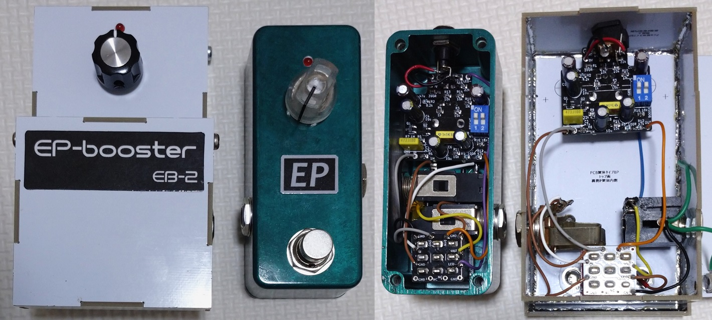
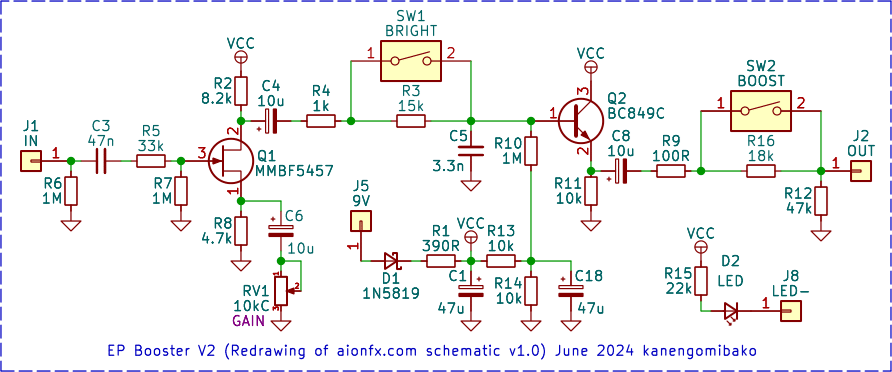
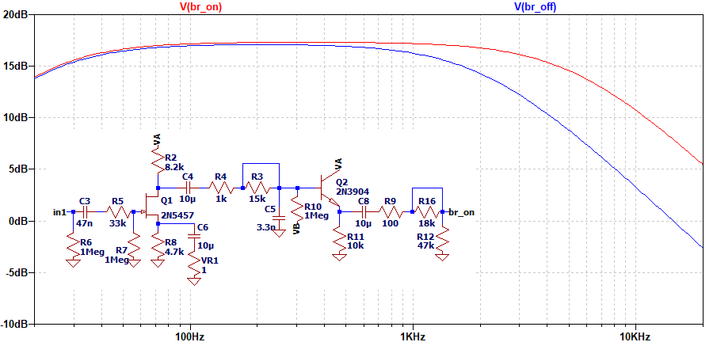
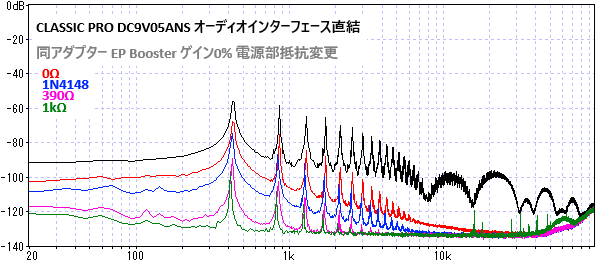

EP Booster V2
2024年06月29日 カテゴリー：自作エフェクター（アナログ）

以前パワーサプライCP-205を改造したとき、電源をオーディオインターフェースに直結してノイズの調査をしました。しかしながら実際にエフェクターに電源供給した場合に、どの程度電源ノイズの影響があるのか調べていませんでした。そこで、ある程度電源ノイズに弱そうかつポピュラーなエフェクターとしてEP Boosterを製作し、電源ノイズの影響を調べることにしました。
▽回路図

Aion FXのTracing Journalの回路図を、基板発注のためにKiCadで描き直したものです。JFETのソース接地増幅回路とバイポーラトランジスタのバッファが組み込まれています。元々はEchoplex EP-3の入力部の回路をアレンジしたもののようです。
▽シミュレーション
・GAIN 100% BOOST オン BRIGHT オン／オフ

BRIGHTスイッチオン時の高音域のカットは、9.2kΩ抵抗と3.3nFのコンデンサのローパスフィルタ（カットオフ周波数5.2kHz）とほぼ同等となります。高音域と低音域がある程度カットされること、増幅時に少し歪みが加わることがうまい具合の味付けになっているのだと思います。
【電源の影響】
以前の測定で最もノイズが大きかったCLASSIC PROのACアダプターを使用しました。電源部の390Ωの抵抗を他の値やダイオードに変え、通常通りエフェクト出力からオーディオインターフェースに接続します。エフェクト入力はグラウンドに接続しています。

抵抗値が大きい方がノイズがカットされますが、それなりにノイズが残っていることがわかります。ダイオードの場合でも少し効果があるのは意外でした。オーディオインターフェースに電源を直結して測定したデータも、ある程度目安になりそうです。
やはりトランジスタ・FETを使ったブースター等では、特にローノイズな電源が必要ということになります。エフェクターを設計する際にも、基本的に電源部のフィルターは省かない方がよさそうです。